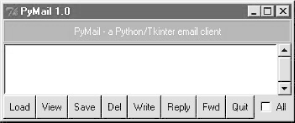
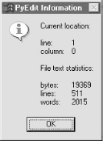

| I l@ve RuBoard |
|
11.4 The PyMailGui Email ClientAs a finale for this chapter's email tools coverage, this section presents PyMailGui -- a Python/Tkinter program that implements a client-side email processing user interface. It is presented both as an instance of Python Internet scripting and as an example that ties together other tools we've already seen, such as threads and Tkinter GUIs. Like the pymail program we wrote earlier, PyMailGui runs entirely on your local computer. Your email is fetched from and sent to remote mail servers over sockets, but the program and its user interface run locally. Because of that, PyMailGui is called an email client : it employs Python's client-side tools to talk to mail servers from the local machine. In fact, in some ways, PyMailGui builds on top of pymail to add a GUI. Unlike pymail, though, PyMailGui is a fairly full-featured user interface: email operations are performed with point-and-click operations. 11.4.1 Why PyMailGui?Like many examples presented in this text, PyMailGui is also a practical, useful program. In fact, I run it on all kinds of machines to check my email while traveling around the world teaching Python classes (it's another workaround for Telnet-challenged ISPs). Although PyMailGui won't put Microsoft Outlook out of business anytime soon, I like it for two reasons:
It's also worth mentioning that PyMailGui achieves this portability and scriptability, and implements a full-featured email interface along the way, in roughly 500 lines of program code. It doesn't have as many bells and whistles as commercial products, but the fact that it gets as close as it does in so few lines of code is a testament to the power of both the Python language and its libraries. 11.4.2 Running PyMailGuiOf course, to script PyMailGui on your own, you'll need to be able to run it. PyMailGui only requires a computer with some sort of Internet connectivity (a PC with a dialup account and modem will do) and an installed Python with the Tkinter extension enabled. The Windows port of Python has this capability, so Windows PC users should be able to run this program immediately by clicking its icon (the Windows port self-installer is on this book's CD (see http://examples.oreilly.com/python2) and also at http://www.python.org). You'll also want to change the file mailconfig.py in the email examples directory to reflect your account's parameters; more on this as we interact with the system. 11.4.3 Presentation StrategyPyMailGui is easily one of the longest programs in this book (its main script is some 500 lines long, counting blank lines and comments), but it doesn't introduce many library interfaces that we haven't already seen in this book. For instance:
We're also going to reuse the TextEditor object we wrote in Chapter 9, to view and compose messages, the simple pymail module's tools we wrote earlier in this chapter to load and delete mail from the server, and the mailconfig module of this chapter to fetch email parameters. PyMailGui is largely an exercise in combining existing tools. On the other hand, because this program is so long, we won't exhaustively document all of its code. Instead, we'll begin by describing how PyMailGui works from an end-user's perspective. After that, we'll list the system's new source code modules without any additional comments, for further study. Like most longer case studies in this book, this section assumes that you already know enough Python to make sense of the code on your own. If you've been reading this book linearly, you should also know enough about Tkinter, threads, and mail interfaces to understand the library tools applied here. If you get stuck, you may wish to brush-up on the presentation of these topics earlier in the book. 11.4.4 Interacting with PyMailGuiTo make this case study easier to understand, let's begin by seeing what PyMailGui actually does -- its user interaction and email processing functionality -- before jumping into the Python code that implements that behavior. As you read this part, feel free to jump ahead to the code listings that appear after the screen shots, but be sure to read this section, too; this is where I will explain all the subtleties of PyMailGui's design. After this section, you are invited to study the system's Python source code listings on your own for a better and more complete explanation than can be crafted in English. 11.4.4.1 Getting startedPyMailGui is a Python/Tkinter program, run by executing its top-level script file, PyMailGui.py. Like other Python programs, PyMailGui can be started from the system command line, by clicking on its filename icon in a file explorer interface, or by pressing its button in the PyDemos or PyGadgets launcher bars. However it is started, the first window PyMailGui presents is shown in Figure 11-10. Figure 11-10. PyMailGui main window startThis is the PyMailGui main window -- every operation starts here. It consists of:
In normal operation, users load their email, select an email from the list area by clicking on it, and press a button at the bottom to process it. No mail messages are shown initially; we need to first load them, as we'll see in a moment. Before we do, though, let's press the blue help bar at the top to see what sort of help is available; Figure 11-11 shows the help window pop-up that appears. Figure 11-11. PyMailGui help pop-upThe main part of this window is simply a block of text in a scrolled-text widget, along with two buttons at the bottom. The entire help text is coded as a single triple-quoted string in the Python program. We could get more fancy and spawn a web browser to view HTML-formatted help, but simple text does the job here.[11] The Cancel button makes this nonmodal (i.e., nonblocking) window go away; more interestingly, the Source button pops up a viewer window with the source code of PyMailGui's main script, as shown in Figure 11-12.
Figure 11-12. PyMailGui source code viewer windowNot every program shows you its source code, but PyMailGui follows Python's open source motif. Politics aside, the main point of interest here is that this source viewer window is the same as PyMailGui's email viewer window. All the information here comes from PyMailGui internally; but this same window is used to display and edit mail shipped across the Net, so let's look at its format here:
For instance, if we pick the Tools menu of the text portion of this window, and select its Info entry, we get the standard PyEdit TextEditor object's file text statistics box -- the exact same pop-up we'd get in the standalone PyEdit text editor, and the PyView image view programs we wrote in Chapter 9 (see Figure 11-13). In fact, this is the third reuse of TextEditor in this book: PyEdit, PyView, and now PyMaiGui all present the same text editing interface to users, simply because they all use the same TextEditor object. For purposes of showing source code, we could also simply spawn the PyEdit program with the source file's name as a command-line argument (see PyEdit earlier in the text for more details). PyMailGui attaches an instance instead. Figure 11-13. PyMailGui attached TextEditor info boxTo display email, PyMailGui inserts its text into an attached TextEditor object; to compose mail, PyMailGui presents a TextEditor and later fetches all its text out to ship over the Net. Besides the obvious simplification here, this code reuse also makes it easy to pick up improvements and fixes -- any changes in the TextEditor object are automatically inherited by PyMailGui, PyView, and PyEdit. 11.4.4.2 Loading mailNow, let's go back to the PyMailGui main window, and click the Load button to retrieve incoming email over the POP protocol. Like pymail, PyMailGui's load function gets account parameters from the mailconfig module listed in Example 11-15, so be sure to change this file to reflect your email account parameters (i.e., server names and usernames) if you wish to use PyMailGui to read your own email. The account password parameter merits a few extra words. In PyMailGui, it may come from one of two places:
Figure 11-1 shows the password input prompt you get if you haven't stored your password in a local file. Note that the password you type is not shown -- a show='*' option for the Entry field used in this pop-up tells Tkinter to echo typed characters as stars (this option is similar in spirit to both the getpass console input module we met earlier in this chapter, and an HTML type=password option we'll meet in a later chapter). Once entered, the password lives only in memory on your machine; PyMailGui itself doesn't store it anywhere in a permanent way. Also notice that the local file password option requires you to store your password unencrypted in a file on the local client computer. This is convenient (you don't need to retype a password every time you check email), but not generally a good idea on a machine you share with others; leave this setting blank in mailconfig if you prefer to always enter your password in a pop-up. Figure 11-14. PyMailGui password input dialogOnce PyMailGui fetches your mail parameters and somehow obtains your password, it will next attempt to pull down all your incoming email from your POP server. PyMailGui reuses the load-mail tools in the pymail module listed in Example 11-18, which in turn uses Python's standard poplib module to retrieve your email. 11.4.4.3 Threading long-running email transfersUltimately, though, the load function must download your email over a socket. If you get as much email as I do, this can take awhile. Rather than blocking the GUI while the load is in progress, PyMailGui spawns a thread to do the mail download operation in parallel with the rest of the program. The main program continues responding to window events (e.g., redrawing the display after another window has been moved over it) while your email is being downloaded. To let you know that a download is in progress in the background, PyMailGui pops up the wait dialog box shown in Figure 11-15. Figure 11-15. PyMailGui load mail wait box (thread running)This dialog grabs focus and thus effectively disables the rest of the GUI's buttons while a download is in progress. It stays up for the duration of the download, and goes away automatically when the download is complete. Similar wait pop-ups appear during other long-running socket operations (email send and delete operations), but the GUI itself stays alive because the operations run in a thread. On systems without threads, PyMailGui instead goes into a blocked state during such long-running operations (it stubs out the thread spawn operation to perform a simple function call). Because the GUI is essentially dead without threads, covering and uncovering the GUI during a mail load on such platforms will erase or otherwise distort its contents.[12] Threads are enabled by default on most platforms that Python runs on (including Windows), so you probably won't see such oddness on your machine.
One note here: as mentioned when we met the FTP GUIs earlier in this chapter, on MS Windows, only the thread that creates windows can process them. Because of that, PyMailGui takes care to not do anything related to the user interface within threads that load, send, or delete email. Instead, the main program continues responding to user interface events and updates, and watches for a global "I'm finished" flag to be set by the email transfer threads. Recall that threads share global (i.e., module) memory; since there is at most only two threads active in PyMailGui at once -- the main program and an email transfer thread -- a single global flag is all the cross-thread communication mechanism we need. 11.4.4.4 Load server interfaceBecause the load operation is really a socket operation, PyMailGui will automatically connect to your email server using whatever connectivity exists on the machine on which it is run. For instance, if you connect to the Net over a modem, and you're not already connected, Windows automatically pops up the standard connection dialog; Figure 11-16 shows the one I get on my laptop. If PyMailGui runs on a machine with a dedicated Internet link, it uses that instead. Figure 11-16. PyMailGui connection dialog (Windows)After PyMailGui finishes loading your email, it populates the main window's list box with all of the messages on your email server, and scrolls to the most recently received. Figure 11-17 shows what the main windows looks like on my machine. Figure 11-17. PyMailGui main window after loadTechnically, the Load button fetches all your mail the first time it is pressed, but fetches only newly arrived email on later presses. PyMailGui keeps track of the last email loaded, and requests only higher email numbers on later loads. Already-loaded mail is kept in memory, in a Python list, to avoid the cost of downloading it again. Like the simple pymail command-line interface shown earlier, PyMailGui does not delete email from your server when it is loaded; if you really want to not see an email on a later load, you must explicitly delete it (more on this later). Like most GUIs in this book, the main window can be resized; Figure 11-18 shows what it looks like when stretched to reveal more email details. Entries in the main list show just enough to give the user an idea of what the message contains -- each entry gives the concatenation of portions of the message's "Subject:", "From:", and "Date:" header lines, separated by | characters, and prefixed with the message's POP number (e.g., there are 91 emails in this list). The columns don't always line up neatly (some headers are shorter than others), but it's enough to hint at the message's contents. Figure 11-18. PyMailGui main window resizedAs we've seen, much magic happens when downloading email -- the client (the machine on which PyMailGui runs) must connect to the server (your email account machine) over a socket, and transfer bytes over arbitrary Internet links. If things go wrong, PyMailGui pops up standard error dialog boxes to let you know what happened. For example, if PyMailGui cannot establish a connection at all, you'll get a window like that shown in Figure 11-19. Figure 11-19. PyMailGui connection error boxThe details displayed here are just the Python exception type and exception data. If you typed an incorrect username or password for your account (in the mailconfig module or in the password pop-up), you'll see the message in Figure 11-20. Figure 11-20. PyMailGui invalid password error boxThis box shows the exception raised by the Python poplib module. If PyMailGui cannot contact your server (e.g., it's down, or you listed its name wrong in mailconfig), you'll get the pop-up shown in Figure 11-21. Figure 11-21. PyMailGui invalid or down server error box11.4.4.5 Sending emailOnce we've loaded email, we can process our messages with buttons on the main window. We can, however, send new emails at any time, even before a load. Pressing the Write button on the main window generates a mail composition window; one has been captured in Figure 11-22. Figure 11-22. PyMailGui write mail compose windowThis window is just like the help source code viewer we saw a moment ago -- it has fields for entering header line details, and an attached TextEditor object for writing the body of the new email. For write operations, PyMailGui automatically fills the "From" line and inserts a signature text line (" -- Mark..."), from your mailconfig module settings. You can change these to any text you like, but the defaults are filled in automatically from your mailconfig. There is also a new "Send" button here: when pressed, the text you typed into the the body of this window is mailed to the addresses you typed into the "To" and "Cc" lines, using Python's smtplib module. PyMailGui adds the header fields you type as mail header lines in the sent message. To send to more than one address, separate them with a ";" in the "To" and "Cc" lines (we'll see an example of this in a moment). In this mail, I fill in the "To" header with my own email address, to send the message to myself for illustration purposes. As we've seen, smtplib ultimately sends bytes to a server over a socket. Since this can be a long-running operation, PyMailGui delegates this operation to a spawned thread, too. While the send thread runs, the wait window in Figure 11-23 appears, and the entire GUI stays alive; redraw and move events are handled in the main program thread, while the send thread talks to the SMTP server. Figure 11-23. PyMailGui send mail wait box (thread running)You'll get an error pop-up if Python cannot send a message to any of the target recipients, for any reason. If you don't get an error pop-up, everything worked correctly, and your mail will show up in the recipients' mailboxes on their email servers. Since I sent the message above to myself, it shows up in mine the next time I press the main window's Load button, as we see in Figure 11-24. Figure 11-24. PyMailGui main window after sends, loadIf you look back to the last main window shot, you'll notice that there are only two new emails now -- numbers 92 (from Python-Help) and 93 (the one I just wrote); PyMailGui is smart enough to download only the two new massages, and tack them onto the end of the loaded email list. 11.4.4.6 Viewing emailNow, let's view the mail message that was sent and received. PyMailGui lets us view email in formatted or raw modes. First, highlight (single-click) the mail you want to see in the main window, and press the View button. A formatted mail viewer window like that shown in Figure 11-25 appears. Figure 11-25. PyMailGui view incoming mail windowThis is the exact same window we saw displaying source code earlier, only now all the information is filled in by extracting bits of the selected email message. Python's rfc822 module is used to parse out header lines from the raw text of the email message; their text is placed into the fields in the top right of the window. After headers are parsed, the message's body text is left behind (in a StringIO file-like string wrapper), and is read and stuffed into a new TextEditor object for display (the white part in the middle of the window). Besides the nicely formatted view window, PyMailGui also lets us see the raw text of a mail message. Double-click on a message's entry in the main window's list to bring up a simple unformatted display of the mail's text. The raw version of the mail I sent to myself is shown in Figure 11-26. Figure 11-26. PyMailGui raw mail text view windowThis raw text display can be useful to see special mail headers not shown in the formatted view. For instance, the optional "X-Mailer:" header in the raw text display identifies the program that transmitted a message; PyMailGui adds it automatically, along with standard headers like "From:" and "To:". Other headers are added as the mail is transmitted: the "Received:" headers name machines that the message was routed through on its way to our email server. And really, the raw text form is all there is to an email message -- it's what is transferred from machine to machine when mail is sent. The nicely formatted display simply parses out pieces of the mail's raw text with standard Python tools and places them in associated fields of the display of Figure 11-25. 11.4.4.7 Email replies and forwardsBesides allowing reading and writing email, PyMailGui also lets users forward and reply to incoming email sent from others. To reply to an email, select its entry in the main window's list and click the Reply button. If I reply to the mail I just sent to myself (arguably narcissistic, but demonstrative), the mail composition window shown in Figure 11-27 appears. Figure 11-27. PyMailGui reply compose windowThis window is identical in format to the one we saw for the "Write" operation, except that PyMailGui fills in some parts automatically:
Luckily, all of this is much easier than it may sound. Python's standard rfc822 module is used to extract all the original message's header lines, and a single string.replace call does the work of adding the > quotes to the original message body. I simply type what I wish to say in reply (the initial paragraph in the mail's text area), and press the Send button to route the reply message to the mailbox on my mail server again. Physically sending the reply works the same as sending a brand new message -- the mail is routed to your SMTP server in a spawned send mail thread, and the send mail wait pop-up appears. Forwarding a message is similar to replying: select the message in the main window, press the "Fwd" button, and fill in the fields and text area of the popped-up composition window. Figure 11-28 shows the window created to forward the mail we originally wrote and received. Figure 11-28. PyMailGui forward compose windowMuch like replies, "From" is filled from mailconfig, the original text is automatically quoted in the message body again, and the subject line is preset to the original message's subject prepended with the string "Fwd:". I have to fill in the "To" line manually, though, because this is not a direct reply (it doesn't necessarily go back to the original sender). Notice that I'm forwarding this message to two different addresses; multiple recipient addresses are separated with a ";" character in "To" and "Cc" header fields. The Send button in this window fires the forward message off to all addresses listed in "To" and "Cc". Figure 11-29. PyMailGui mail list after sends and loadOkay, I've now written a new message, and replied to and forwarded it. The reply and forward were sent to my email address, too; if we press the main window's Load button again, the reply and forward messages should show up in the main window's list. In Figure 11-29, they appear as messages 94 and 95. Keep in mind that PyMailGui runs on the local computer, but the messages you see in the main window's list actually live in a mailbox on your email server machine. Every time we press Load, PyMailGui downloads but does not delete newly arrived email from the server to your computer. The three messages we just wrote (93-95) will also appear in any other email program you use on your account (e.g., in Outlook). PyMailGui does not delete messages as they are downloaded, but simply stores them in your computer's memory for processing. If we now select message 95 and press View, we see the forward message we sent, as in Figure 11-30. Really, this message went from my machine to a remote email server, and was downloaded from there into a Python list from which it is displayed. Figure 11-30. PyMailGui view forwarded mailFigure 11-31 shows what the forward message's raw text looks like; again, double-click on a main window's entry to display this form. The formatted display in Figure 11-30 simply extracts bits and pieces out of the text shown in the raw display form. Figure 11-31. PyMailGui view forwarded mail, raw11.4.4.8 Saving and deleting emailSo far, we've covered everything except two of the main window's processing buttons and the All checkbox. PyMailGui lets us save mail messages in local text files, and delete messages from the server permanently, such that we won't see them the next time we access our account. Moreover, we can save and delete a single mail at a time, or all mails displayed in the main windows list:
Delete operations are kicked off the same way, but press the Del button instead. In typical operation, I eventually delete email I'm not interested in, and save and delete emails that are important. Save operations write the raw text of one or more emails to a local text file you pick in the pop-up dialog shown in Figure 11-32. Figure 11-32. PyMailGui save mail dialogTechnically, saves always append raw message text to the chosen file; the file is opened in 'a' mode, which creates the file if needed, and writes at its end. The save operation is also smart enough to remember the last directory you selected; the file dialog begins navigation there the next time you press Save. Delete operations can also be applied to one or all messages. Unlike other operations, though, delete requests are simply queued up for later action. Messages are actually deleted from your mail server only as PyMailGui is exiting. For instance, if we've selected some messages for deletion and press the main window's Quit button, a standard verification dialog appears (Figure 11-33). Figure 11-33. PyMailGui quit verification If we then verify the quit request, a second dialog appears (Figure 11-34), asking us to verify deletion of the queued up messages. If we press No here, no deletes happen, and PyMailGui silently exits. If we select Yes, PyMailGui spawns one last thread to send deletion requests to the email server for all the emails selected for deletion during the session. Another wait-state pop-up appears while the delete thread is running; when that thread is finished, PyMailGui exits as well. Figure 11-34. PyMailGui delete verification on quitBy default and design, no mail is ever removed: you will see the same messages the next time PyMailGui runs. It deletes mail from your server only when you ask it to, deletes messages only on exit, and then only if verified in the last pop-up shown (this is your last chance to prevent permanent mail removal). 11.4.4.9 POP message numbersThis may seem a roundabout way to delete mail, but it accommodates a property of the POP interface. POP assigns each message a sequential number, starting from 1, and these numbers are passed to the server to fetch and delete messages. It's okay if new mail arrives while we're displaying the result of a prior download -- the new mail is assigned higher numbers, beyond what is displayed on the client. But if we delete a message in the middle of a mailbox, the numbers of all messages after the one deleted change (they are decremented by one). That means that some message numbers may be no longer valid if deletions are made while viewing previously loaded email (deleting by some number N may really delete message N+1!). PyMailGui could adjust all the displayed numbers to work around this. To keep things simple, though, it postpones deletions instead. Notice that if you run multiple instances of PyMailGui at once, you shouldn't delete in one and then another because message numbers may become confused. You also may not be happy with the results of running something like Outlook at the same time as a PyMailGui session, but the net effect of such a combination depends on how another mail client handles deletions. In principle, PyMailGui could be extended to prevent other instances from running at the same time, but we leave that as an exercise. 11.4.4.10 Windows and status messagesBefore we close this section, I want to point out that PyMailGui is really meant to be a multiple-window interface -- something not made obvious by the earlier screen shots. For example, Figure 11-35 shows PyMailGui with a main list box, help, and three mail view windows. All these windows are nonmodal; that is, they are all active and independent, and do not block other windows from being selected. This interface all looks slightly different on Linux, but has the same functionality. Figure 11-35. PyMailGui multiple windows and text editorsIn general, you can have any number of mail view or compose windows up at once, and cut and paste between them. This matters, because PyMailGui must take care to make sure that each window has a distinct text editor object. If the text editor object was a global, or used globals internally, you'd likely see the same text in each window (and the send operations might wind up sending text from another window). To avoid this, PyMailGui creates and attaches a new TextEditor instance to each view and compose window it creates, and associates the new editor with the Send button's callback handler to make sure we get the right text. Finally, PyMailGui prints a variety of status messages as it runs, but you see them only if you launch the program from the system command line (e.g., a DOS box on Windows or an xterm on Linux), or by double-clicking on its filename icon (its main script is a .py, not a .pyw). On Windows, you won't see these message when it is started from another program, such as the PyDemos or PyGadgets launcher bar GUIs. These status messages print server information, show mail loading status, and trace the load, store, and delete threads that are spawned along the way. If you want PyMailGui to be more verbose, launch it from a command line and watch: C:\...\PP2E\Internet\Email>python PyMailGui.py
load start
Connecting...
+OK Cubic Circle's v1.31 1998/05/13 POP3 ready <594100005a655e39@chevalier>
('+OK 5 messages (8470 octets)', ['1 709', '2 1136', '3 998', '4 2679',
'5 2948'], 38)
There are 5 mail messages in 8470 bytes
Retrieving: 1 2 3 4 5
load exit
thread exit caught
send start
Connecting to mail... ['<lutz@rmi.net>']
send exit
thread exit caught
You can also double-click on the PyMailGui.py filename in your file explorer GUI and monitor the popped-up DOS console box on Windows; Figure 11-36 captures this window in action. Figure 11-36. PyMailGui console status message windowPyMailGui status messages display the mail currently being downloaded (i.e., the "Retrieving:" lines are appended with a new mail number as each message is downloaded), and so give a more informative download status indicator than the wait pop-up window. 11.4.5 Implementing PyMailGuiLast but not least, we get to the code. There are really only two new modules here: one where the help text is stored and another that implements the system. In fact, PyMailGui gets a lot of mileage out of reusing modules we wrote earlier and won't repeat here: pymail for mail load and delete operations, mailconfig for mail parameters, the GUI section's TextEditor for displaying and editing mail message text, and so on. In addition, standard Python modules used here such as poplib, smtplib, and rfc822 hide most of the details of pushing bytes around the Net and extracting message components. Tkinter implements GUI components in a portable fashion. 11.4.5.1 Help text moduleThe net effect of all this reuse is that PyMailGui implements a fairly feature-rich email program in roughly 500 lines of code, plus one support module. Example 11-22 shows the support module -- used only to define the help text string, to avoid cluttering the main script file. Example 11-22. PP2E\Internet\Email\PyMailGuiHelp.py#####################################################################
# PyMailGui help text string, in this seperate module only to avoid
# distracting from executable code. As coded, we throw up this text
# in a simple scrollable text box; in the future, we might instead
# use an HTML file opened under a web browser (e.g., run a "netscape
# help.html" or DOS "start help.html" command using os.system call
#####################################################################
# must be narrow for Linux info box popups;
# now uses scrolledtext with buttons instead;
helptext = """
PyMail, version 1.0
February, 2000
Programming Python, 2nd Edition
O'Reilly & Associates
Click main window buttons to process email:
- Load:\t fetch all (or newly arrived) POP mail from server
- View:\t display selected message nicely formatted
- Save:\t write selected (or all) emails to a chosen file
- Del:\t mark selected (or all) email to be deleted on exit
- Write:\t compose a new email message, send it by SMTP
- Reply:\t compose a reply to selected email, send it by SMTP
- Fwd:\t compose a forward of selected email, send by SMTP
- Quit:\t exit PyMail, delete any marked emails from server
Click an email in the main window's listbox to select it.
Click the "All" checkbox to apply Save or Del buttons to
all retrieved emails in the list. Double-click on an email
in the main window's listbox to view the mail's raw text,
including mail headers not shown by the View button.
Mail is removed from POP servers on exit only, and only mails
marked for deletion with the Del button are removed, if and
only if you verify the deletion in a confirmation popup.
Change the mailconfig.py module file on your own machine to
reflect your email server names, user name, email address,
and optional mail signature line added to all composed mails.
Miscellaneous hints:
- Passwords are requested if needed, and not stored by PyMail.
- You may put your password in a file named in mailconfig.py.
- Use ';' between multiple addresses in "To" and "Cc" headers.
- Reply and Fwd automatically quote the original mail text.
- Save pops up a dialog for selecting a file to hold saved mails.
- Load only fetches newly-arrived email after the first load.
This client-side program currently requires Python and Tkinter.
It uses Python threads, if installed, to avoid blocking the GUI.
Sending and loading email requires an Internet connection.
"""
if __name__ == '__main__':
print helptext # to stdout if run alone
raw_input('Press Enter key') # pause in DOS console popups
11.4.5.2 Main moduleAnd finally, here is the main PyMailGui script -- the file run to start the system (see Example 11-23). I've already told what it does and why, so studying this listing's code and its comments for a deeper look is left as a suggested exercise. Python is so close to pseudocode already, that additional narrative here would probably be redundant. Although I use this example on a daily basis as is, it is also prime for extension. For instance:
And so on; because this software is open source, it is also necessarily open-ended. Suggested exercises in this category are delegated to your imagination. Example 11-23. PP2E\Internet\Email\PyMailGui.py######################################################
# PyMailGui 1.0 - A Python/Tkinter email client.
# Adds a Tkinter-based GUI interface to the pymail
# script's functionality. Works for POP/SMTP based
# email accounts using sockets on the machine on
# which this script is run. Uses threads if
# installed to run loads, sends, and deletes with
# no blocking; threads are standard on Windows.
# GUI updates done in main thread only (Windows).
# Reuses and attaches TextEditor class object.
# Run from command-line to see status messages.
# See use notes in help text in PyMailGuiHelp.py.
# To do: support attachments, shade deletions.
######################################################
# get services
import pymail, mailconfig
import rfc822, StringIO, string, sys
from Tkinter import *
from tkFileDialog import asksaveasfilename, SaveAs
from tkMessageBox import showinfo, showerror, askyesno
from PP2E.Gui.TextEditor.textEditor import TextEditorComponentMinimal
# run if no threads
try: # raise ImportError to
import thread # run with gui blocking
except ImportError: # no wait popups appear
class fakeThread:
def start_new_thread(self, func, args):
apply(func, args)
thread = fakeThread()
# init global/module vars
msgList = [] # list of retrieved emails text
toDelete = [] # msgnums to be deleted on exit
listBox = None # main window's scrolled msg list
rootWin = None # the main window of this program
allModeVar = None # for All mode checkbox value
threadExitVar = 0 # used to signal child thread exit
debugme = 0 # enable extra status messages
mailserver = mailconfig.popservername # where to read pop email from
mailuser = mailconfig.popusername # smtp server in mailconfig too
mailpswd = None # pop passwd via file or popup here
#mailfile = mailconfig.savemailfile # from a file select dialog here
def fillIndex(msgList):
# fill all of main listbox
listBox.delete(0, END)
count = 1
for msg in msgList:
hdrs = rfc822.Message(StringIO.StringIO(msg))
msginfo = '%02d' % count
for key in ('Subject', 'From', 'Date'):
if hdrs.has_key(key): msginfo = msginfo + ' | ' + hdrs[key][:30]
listBox.insert(END, msginfo)
count = count+1
listBox.see(END) # show most recent mail=last line
def selectedMsg():
# get msg selected in main listbox
# print listBox.curselection()
if listBox.curselection() == ():
return 0 # empty tuple:no selection
else: # else zero-based index
return eval(listBox.curselection()[0]) + 1 # in a 1-item tuple of str
def waitForThreadExit(win):
import time
global threadExitVar # in main thread, watch shared global var
delay = 0.0 # 0.0=no sleep needed on Win98 (but hogs cpu)
while not threadExitVar:
win.update() # dispatch any new GUI events during wait
time.sleep(delay) # if needed, sleep so other thread can run
threadExitVar = 0 # at most one child thread active at once
def busyInfoBoxWait(message):
# popup wait message box, wait for a thread exit
# main gui event thread stays alive during wait
# as coded returns only after thread has finished
# popup.wait_variable(threadExitVar) may work too
popup = Toplevel()
popup.title('PyMail Wait')
popup.protocol('WM_DELETE_WINDOW', lambda:0) # ignore deletes
label = Label(popup, text=message+'...')
label.config(height=10, width=40, cursor='watch') # busy cursor
label.pack()
popup.focus_set() # grab application
popup.grab_set() # wait for thread exit
waitForThreadExit(popup) # gui alive during wait
print 'thread exit caught'
popup.destroy()
def loadMailThread():
# load mail while main thread handles gui events
global msgList, errInfo, threadExitVar
print 'load start'
errInfo = ''
try:
nextnum = len(msgList) + 1
newmail = pymail.loadmessages(mailserver, mailuser, mailpswd, nextnum)
msgList = msgList + newmail
except:
exc_type, exc_value = sys.exc_info()[:2] # thread exc
errInfo = '\n' + str(exc_type) + '\n' + str(exc_value)
print 'load exit'
threadExitVar = 1 # signal main thread
def onLoadMail():
# load all (or new) pop email
getpassword()
thread.start_new_thread(loadMailThread, ())
busyInfoBoxWait('Retrieving mail')
if errInfo:
global mailpswd # zap pswd so can reinput
mailpswd = None
showerror('PyMail', 'Error loading mail\n' + errInfo)
fillIndex(msgList)
def onViewRawMail():
# view selected message - raw mail text with header lines
msgnum = selectedMsg()
if not (1 <= msgnum <= len(msgList)):
showerror('PyMail', 'No message selected')
else:
text = msgList[msgnum-1] # put in ScrolledText
from ScrolledText import ScrolledText
window = Toplevel()
window.title('PyMail raw message viewer #' + str(msgnum))
browser = ScrolledText(window)
browser.insert('0.0', text)
browser.pack(expand=YES, fill=BOTH)
def onViewFormatMail():
# view selected message - popup formatted display
msgnum = selectedMsg()
if not (1 <= msgnum <= len(msgList)):
showerror('PyMail', 'No message selected')
else:
mailtext = msgList[msgnum-1] # put in a TextEditor form
textfile = StringIO.StringIO(mailtext)
headers = rfc822.Message(textfile) # strips header lines
bodytext = textfile.read() # rest is message body
editmail('View #%d' % msgnum,
headers.get('From', '?'),
headers.get('To', '?'),
headers.get('Subject', '?'),
bodytext,
headers.get('Cc', '?'))
# use objects that retain prior directory for the next
# select, instead of simple asksaveasfilename() dialog
saveOneDialog = saveAllDialog = None
def myasksaveasfilename_one():
global saveOneDialog
if not saveOneDialog:
saveOneDialog = SaveAs(title='PyMail Save File')
return saveOneDialog.show()
def myasksaveasfilename_all():
global saveAllDialog
if not saveAllDialog:
saveAllDialog = SaveAs(title='PyMail Save All File')
return saveAllDialog.show()
def onSaveMail():
# save selected message in file
if allModeVar.get():
mailfile = myasksaveasfilename_all()
if mailfile:
try:
# maybe this should be a thread
for i in range(1, len(msgList)+1):
pymail.savemessage(i, mailfile, msgList)
except:
showerror('PyMail', 'Error during save')
else:
msgnum = selectedMsg()
if not (1 <= msgnum <= len(msgList)):
showerror('PyMail', 'No message selected')
else:
mailfile = myasksaveasfilename_one()
if mailfile:
try:
pymail.savemessage(msgnum, mailfile, msgList)
except:
showerror('PyMail', 'Error during save')
def onDeleteMail():
# mark selected message for deletion on exit
global toDelete
if allModeVar.get():
toDelete = range(1, len(msgList)+1)
else:
msgnum = selectedMsg()
if not (1 <= msgnum <= len(msgList)):
showerror('PyMail', 'No message selected')
elif msgnum not in toDelete:
toDelete.append(msgnum) # fails if in list twice
def sendMailThread(From, To, Cc, Subj, text):
# send mail while main thread handles gui events
global errInfo, threadExitVar
import smtplib, time
from mailconfig import smtpservername
print 'send start'
date = time.ctime(time.time())
Cchdr = (Cc and 'Cc: %s\n' % Cc) or ''
hdrs = ('From: %s\nTo: %s\n%sDate: %s\nSubject: %s\n'
% (From, To, Cchdr, date, Subj))
hdrs = hdrs + 'X-Mailer: PyMailGui Version 1.0 (Python)\n'
Ccs = (Cc and string.split(Cc, ';')) or [] # some servers reject ['']
Tos = string.split(To, ';') + Ccs # cc: hdr line, and To list
Tos = map(string.strip, Tos) # some addrs can have ','s
print 'Connecting to mail...', Tos # strip spaces around addrs
errInfo = ''
failed = {} # smtplib may raise except
try: # or return failed Tos dict
server = smtplib.SMTP(smtpservername)
failed = server.sendmail(From, Tos, hdrs + text)
server.quit()
except:
exc_type, exc_value = sys.exc_info()[:2] # thread exc
excinfo = '\n' + str(exc_type) + '\n' + str(exc_value)
errInfo = 'Error sending mail\n' + excinfo
else:
if failed: errInfo = 'Failed recipients:\n' + str(failed)
print 'send exit'
threadExitVar = 1 # signal main thread
def sendMail(From, To, Cc, Subj, text):
# send completed email
thread.start_new_thread(sendMailThread, (From, To, Cc, Subj, text))
busyInfoBoxWait('Sending mail')
if errInfo:
showerror('PyMail', errInfo)
def onWriteReplyFwdSend(window, editor, hdrs):
# mail edit window send button press
From, To, Cc, Subj = hdrs
sendtext = editor.getAllText()
sendMail(From.get(), To.get(), Cc.get(), Subj.get(), sendtext)
if not errInfo:
window.destroy() # else keep to retry or save
def editmail(mode, From, To='', Subj='', origtext='', Cc=''):
# create a new mail edit/view window
win = Toplevel()
win.title('PyMail - '+ mode)
win.iconname('PyMail')
viewOnly = (mode[:4] == 'View')
# header entry fields
frm = Frame(win); frm.pack( side=TOP, fill=X)
lfrm = Frame(frm); lfrm.pack(side=LEFT, expand=NO, fill=BOTH)
mfrm = Frame(frm); mfrm.pack(side=LEFT, expand=NO, fill=NONE)
rfrm = Frame(frm); rfrm.pack(side=RIGHT, expand=YES, fill=BOTH)
hdrs = []
for (label, start) in [('From:', From),
('To:', To), # order matters on send
('Cc:', Cc),
('Subj:', Subj)]:
lab = Label(mfrm, text=label, justify=LEFT)
ent = Entry(rfrm)
lab.pack(side=TOP, expand=YES, fill=X)
ent.pack(side=TOP, expand=YES, fill=X)
ent.insert('0', start)
hdrs.append(ent)
# send, cancel buttons (need new editor)
editor = TextEditorComponentMinimal(win)
sendit = (lambda w=win, e=editor, h=hdrs: onWriteReplyFwdSend(w, e, h))
for (label, callback) in [('Cancel', win.destroy), ('Send', sendit)]:
if not (viewOnly and label == 'Send'):
b = Button(lfrm, text=label, command=callback)
b.config(bg='beige', relief=RIDGE, bd=2)
b.pack(side=TOP, expand=YES, fill=BOTH)
# body text editor: pack last=clip first
editor.pack(side=BOTTOM) # may be multiple editors
if (not viewOnly) and mailconfig.mysignature: # add auto signature text?
origtext = ('\n%s\n' % mailconfig.mysignature) + origtext
editor.setAllText(origtext)
def onWriteMail():
# compose new email
editmail('Write', From=mailconfig.myaddress)
def quoteorigtext(msgnum):
origtext = msgList[msgnum-1]
textfile = StringIO.StringIO(origtext)
headers = rfc822.Message(textfile) # strips header lines
bodytext = textfile.read() # rest is message body
quoted = '\n-----Original Message-----\n'
for hdr in ('From', 'To', 'Subject', 'Date'):
quoted = quoted + ( '%s: %s\n' % (hdr, headers.get(hdr, '?')) )
quoted = quoted + '\n' + bodytext
quoted = '\n' + string.replace(quoted, '\n', '\n> ')
return quoted
def onReplyMail():
# reply to selected email
msgnum = selectedMsg()
if not (1 <= msgnum <= len(msgList)):
showerror('PyMail', 'No message selected')
else:
text = quoteorigtext(msgnum)
hdrs = rfc822.Message(StringIO.StringIO(msgList[msgnum-1]))
toname, toaddr = hdrs.getaddr('From')
if toname and ',' in toname: toname = '"%s"' % toname
To = '%s <%s>' % (toname, toaddr)
From = mailconfig.myaddress or ('%s <%s>' % hdrs.getaddr('To'))
Subj = 'Re: ' + hdrs.get('Subject', '(no subject)')
editmail('Reply', From, To, Subj, text)
def onFwdMail():
# forward selected email
msgnum = selectedMsg()
if not (1 <= msgnum <= len(msgList)):
showerror('PyMail', 'No message selected')
else:
text = quoteorigtext(msgnum)
hdrs = rfc822.Message(StringIO.StringIO(msgList[msgnum-1]))
From = mailconfig.myaddress or ('%s <%s>' % hdrs.getaddr('To'))
Subj = 'Fwd: ' + hdrs.get('Subject', '(no subject)')
editmail('Forward', From, '', Subj, text)
def deleteMailThread(toDelete):
# delete mail while main thread handles gui events
global errInfo, threadExitVar
print 'delete start'
try:
pymail.deletemessages(mailserver, mailuser, mailpswd, toDelete, 0)
except:
exc_type, exc_value = sys.exc_info()[:2]
errInfo = '\n' + str(exc_type) + '\n' + str(exc_value)
else:
errInfo = ''
print 'delete exit'
threadExitVar = 1 # signal main thread
def onQuitMail():
# exit mail tool, delete now
if askyesno('PyMail', 'Verify Quit?'):
if toDelete and askyesno('PyMail', 'Really Delete Mail?'):
getpassword()
thread.start_new_thread(deleteMailThread, (toDelete,))
busyInfoBoxWait('Deleting mail')
if errInfo:
showerror('PyMail', 'Error while deleting:\n' + errInfo)
else:
showinfo('PyMail', 'Mail deleted from server')
rootWin.quit()
def askpassword(prompt, app='PyMail'): # getpass.getpass uses stdin, not GUI
win = Toplevel() # tkSimpleDialog.askstring echos input
win.title(app + ' Prompt')
Label(win, text=prompt).pack(side=LEFT)
entvar = StringVar()
ent = Entry(win, textvariable=entvar, show='*')
ent.pack(side=RIGHT, expand=YES, fill=X)
ent.bind('<Return>', lambda event, savewin=win: savewin.destroy())
ent.focus_set(); win.grab_set(); win.wait_window()
win.update()
return entvar.get() # ent widget is now gone
def getpassword():
# unless known, set global pop password
# from client-side file or popup dialog
global mailpswd
if mailpswd:
return
else:
try:
localfile = open(mailconfig.poppasswdfile)
mailpswd = localfile.readline()[:-1]
if debugme: print 'local file password', repr(mailpswd)
except:
prompt = 'Password for %s on %s?' % (mailuser, mailserver)
mailpswd = askpassword(prompt)
if debugme: print 'user input password', repr(mailpswd)
def decorate(rootWin):
# window manager stuff for main window
rootWin.title('PyMail 1.0')
rootWin.iconname('PyMail')
rootWin.protocol('WM_DELETE_WINDOW', onQuitMail)
def makemainwindow(parent=None):
# make the main window
global rootWin, listBox, allModeVar
if parent:
rootWin = Frame(parent) # attach to a parent
rootWin.pack(expand=YES, fill=BOTH)
else:
rootWin = Tk() # assume I'm standalone
decorate(rootWin)
# add main buttons at bottom
frame1 = Frame(rootWin)
frame1.pack(side=BOTTOM, fill=X)
allModeVar = IntVar()
Checkbutton(frame1, text="All", variable=allModeVar).pack(side=RIGHT)
actions = [ ('Load', onLoadMail), ('View', onViewFormatMail),
('Save', onSaveMail), ('Del', onDeleteMail),
('Write', onWriteMail), ('Reply', onReplyMail),
('Fwd', onFwdMail), ('Quit', onQuitMail) ]
for (title, callback) in actions:
Button(frame1, text=title, command=callback).pack(side=LEFT, fill=X)
# add main listbox and scrollbar
frame2 = Frame(rootWin)
vscroll = Scrollbar(frame2)
fontsz = (sys.platform[:3] == 'win' and 8) or 10
listBox = Listbox(frame2, bg='white', font=('courier', fontsz))
# crosslink listbox and scrollbar
vscroll.config(command=listBox.yview, relief=SUNKEN)
listBox.config(yscrollcommand=vscroll.set, relief=SUNKEN, selectmode=SINGLE)
listBox.bind('<Double-1>', lambda event: onViewRawMail())
frame2.pack(side=TOP, expand=YES, fill=BOTH)
vscroll.pack(side=RIGHT, fill=BOTH)
listBox.pack(side=LEFT, expand=YES, fill=BOTH)
return rootWin
# load text block string
from PyMailGuiHelp import helptext
def showhelp(helptext=helptext, appname='PyMail'): # show helptext in
from ScrolledText import ScrolledText # a non-modal dialog
new = Toplevel() # make new popup window
bar = Frame(new) # pack first=clip last
bar.pack(side=BOTTOM, fill=X)
code = Button(bar, bg='beige', text="Source", command=showsource)
quit = Button(bar, bg='beige', text="Cancel", command=new.destroy)
code.pack(pady=1, side=LEFT)
quit.pack(pady=1, side=LEFT)
text = ScrolledText(new) # add Text + scrollbar
text.config(font='system', width=70) # too big for showinfo
text.config(bg='steelblue', fg='white') # erase on btn or return
text.insert('0.0', helptext)
text.pack(expand=YES, fill=BOTH)
new.title(appname + " Help")
new.bind("<Return>", (lambda event, new=new: new.destroy()))
def showsource():
# tricky, but open
try: # like web getfile.cgi
source = open('PyMailGui.py').read() # in cwd or below it?
except:
try: # or use find.find(f)[0],
import os # $PP2EHOME, guessLocation
from PP2E.Launcher import findFirst # or spawn pyedit with arg
here = os.curdir
source = open(findFirst(here, 'PyMailGui.py')).read()
except:
source = 'Sorry - cannot find my source file'
subject = 'Main script [see also: PyMailGuiHelp, pymail, mailconfig]'
editmail('View Source Code', 'PyMailGui', 'User', subject, source)
def container():
# use attachment to add help button
# this is a bit easier with classes
root = Tk()
title = Button(root, text='PyMail - a Python/Tkinter email client')
title.config(bg='steelblue', fg='white', relief=RIDGE)
title.config(command=showhelp)
title.pack(fill=X)
decorate(root)
return root
if __name__ == '__main__':
# run stand-alone or attach
rootWin = makemainwindow(container()) # or makemainwindow()
rootWin.mainloop()
|
| I l@ve RuBoard |
|